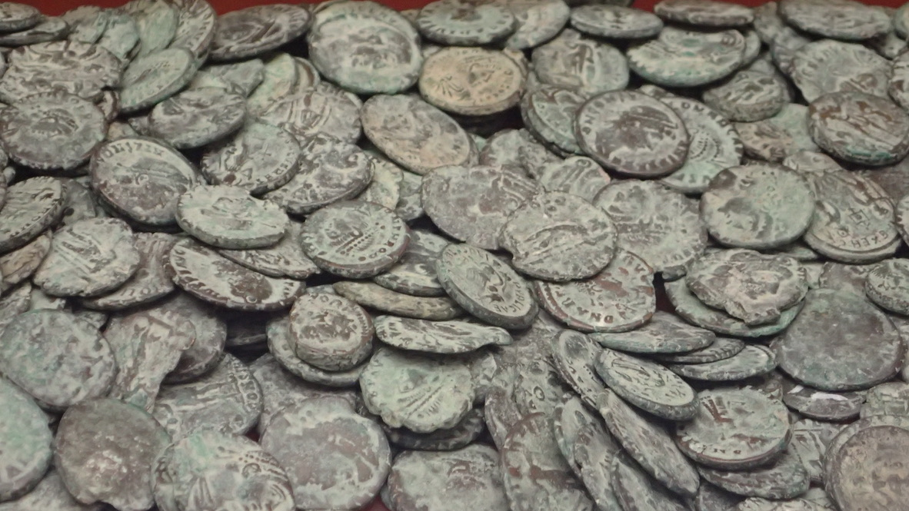

Week 6¶
Coins after Excavation.¶

Whose coin? Whose Identity?¶
As we saw in the previous week, the use of coins in archaeology is compounded by standardization practices in documentation, interpretation and curation. Coin analysis is complex, and when we consider the variety of contexts a coin circulates through (Kemmers and Myrberg 2011), the identities of those who resided where a coin was deposited in the archaeological record cannot be easily equated with the coin itself. The readings for this class present us with further considerations with respect to analyzing coins from archaeological contexts. The purpose for problematizing archaeological and numismatic analysis is to highlight that umbrella terms, like "Byzantine", cannot provide scholars, nor the public, with a complete understanding of a coin's relationship with its past. Furthermore, we will consider how each author navigates the complexities of identity when analyzing coins. Motta (2015), presents us with a variety of Greek and Roman iconography on coins recovered from the ancient port city of Dora and how identities were nuanced in border regions of the Roman world. Julian Baker's (2020) article forces us to think about the identities of those who create, distribute, and use coins in the late medieval period of Byzantine Greece. Here we compare how to extract identity from coins that are counterfeited, clipped, and remained in circulation for a century or more. Lastly, Lockyear's (2012) article presents us with the conundrum of dating coins and dating with coins. Reflecting on Baker's analysis, how can we use coins to date archaeological sites if they remained in circulation for over a century? Can we trust a counterfeit coin's supposed minting date and how does this affect our interpretations for dating stratigraphic contexts? By the end of the class, we should be good and confused about how to attribute identities to coins (but not in a bad way). Thus, by problematizing the identities associated with coins, chronologically, spatially, and temporally, we end this class by asking whose heritage do Byzantine coins represent and are coins cultural property to the modern Nation-State?
Readings:¶
Motta, Rosa Maria. 2015 The Iconography of Dora's Coins. In Material Culture and Cultural Identity: A Study of Greek and Roman Coins from Dora, pp. 42-66. Archaeopress Archaeology, Oxford.
Baker, Julian. 2020 Control over and Manipulation of the Monetary Stock: Official Minting and Counterfeiting, Injection and Culling, Cancellation and Other Alterations. In Coinage and Money in Medieval Greece 1200–1430, pp. 161-176. Brill, Leiden; Boston.
Lockyear, Kris. 2012 Dating Coins, Dating with Coins. Oxford Journal of Archaeology 31(2): 191–211. https://doi.org/10.1111/j.1468-0092.2012.00385.x.
Whose Heritage and Cultural Property?¶
This class's theme is centred on cultural heritage, cultural property and heritage ownership of Byzantine coins. Thinking about the complexities of excavation, documentation, curation and the multiple contexts and identities that a coin passes through temporally and spatially, we will address how do Byzantine coins fit into these hotly debated themes and can nations claim ownership of "Byzantine" material culture? The objective for this class is to force you to think about ethical issues that surround moveable (coins) and non-moveable (an archaeological site) material culture. Since coins are moveable objects both in the past and the present, and have crossed ancient, medieval and modern temporal and geographical borders, who can claim ownership of a coin? Can a Nation, institution or individual own Byzantine coins? How does this affect the presentation of a "Byzantine" coin compared to a "Roman" or "Greek" coin to the public? How does this impact the identities associated to a coin and, thus, effects whose heritage is represented in a museum? What tensions are created with the selling and trade of coins in the modern world? That is a lot to unpack, but don't be scared. Remember, we are not solving these issues, rather, we are thinking about the processes to address such questions.
Readings:¶
Hamilakis, Yannis. 2016 From Ethics to Politics. In Archaeology and Capitalism: from Ethics to Politics, editors. Duke, P. G., and Yannis Hamilakis, pp. 15-40. Routledge, London.
Appiah, Kwame Anthony. 2010 Whose Culture Is It, Anyway? In Cultural Heritage Issues, editors James A.R. Nafziger and Ann M. Nicgorski, pp. 207-221. Brill Leiden.https://doi.org/10.1163/ej.9789004160361.i-466.66.
Sayles, Wayne G, and David Welsh. 2010 Coin Collectors and Cultural Property Nationalism, 4-21.
Topçuoǧlu, Oya, and Tasha Vorderstrasse. 2019 Small Finds, Big Values: Cylinder Seals and Coins from Iraq and Syria on the Online Market. International Journal of Cultural Property 26(3): 239–63. https://doi.org/10.1017/S0940739119000213.
Podcast:¶
Byzantium and Friends, episode 75, The politics of archaeological heritage and reclamation, with Anthony Kaldellis and Jonathan Hall.
Discussion:¶
Explore what Kaldellis and Hall discuss in the podcast concerning cultural property, significance claims of material culture, and how they relate to this weeks readings. Next, visit the webpages for the auction house Spinks and Forvm Ancient Coins and discuss if you agree or disagree with the concepts of National cultural property, local/provincial heritage claims, or claims for private ownership/coin collecting. Should ancient coins be bought and sold through private enterprises? Do you think the sale of ancient coins is a viable means to aid in creating public engagement with "Byzantine" history?
**Make sure to cite your sources and reply to two different discussion posts from classmates who are not in your group. **